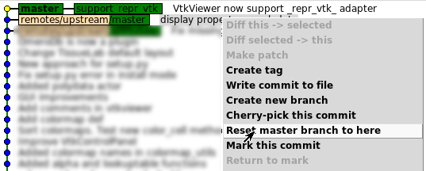

It is very easy to create a new branch from master, dont worry! First create right now a new branch
git checkout -b mybranch
Now all your development are in both master and mybranch. You can check it with gitk.
gitk --all
Then, reset master to its original state
git checkout master
In gitk, right click on text corresponding to upstream/master and select reset master branch to here. In screenshot, "support_repr_vtk" correspond to mybranch.
Now, all is correct. Just push your new branch
git push --set-upstream origin mybranch
Generally, when you are just user, you clone official repository ... But when you become developer, you need to create your personal one to follow git workflow. Here a tip to change it without restarting from scratch:
git remote rename origin upstream
git remote add origin git@...
# address is something like git@github.com:user/openalea.git
git fetch upstream
git fetch origin
# Do it for each branch you are working on
git checkout mybranch
git push --set-upstream origin mybranch